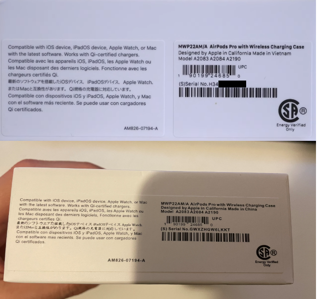
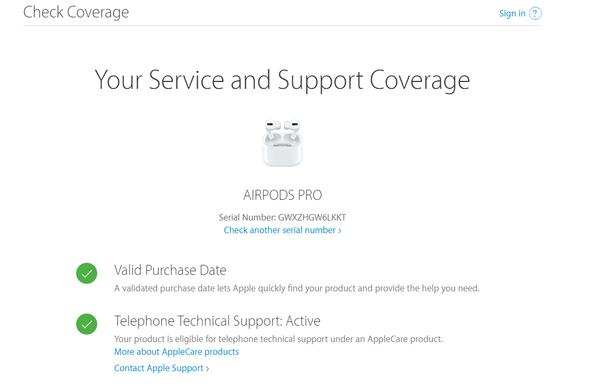
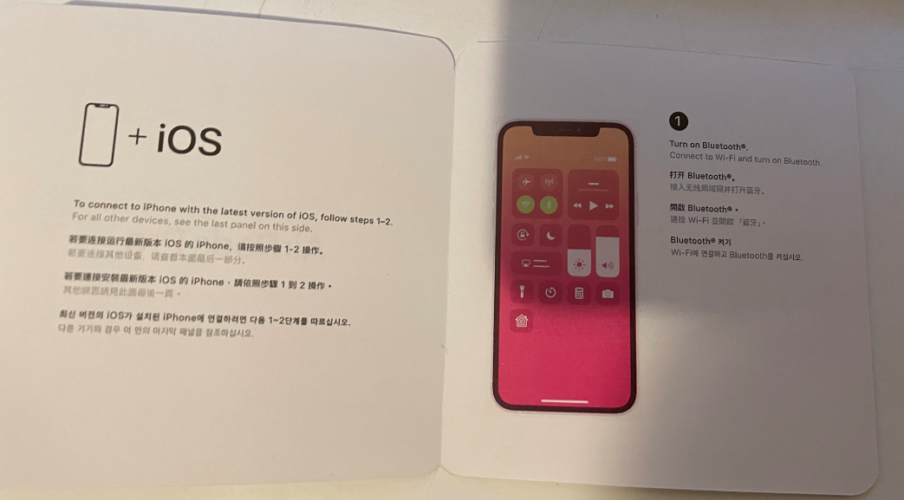
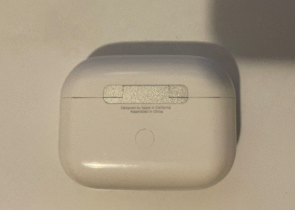
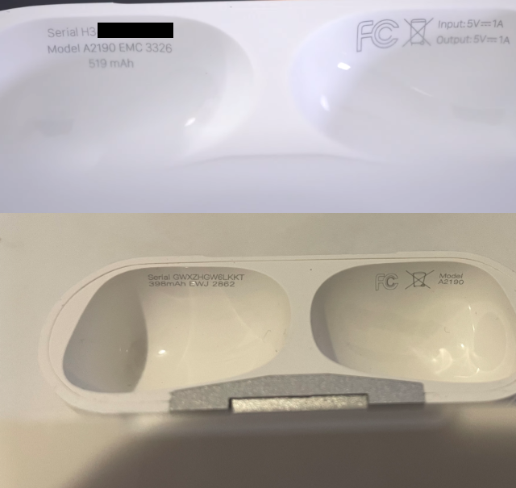
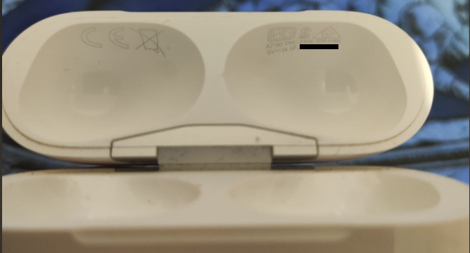
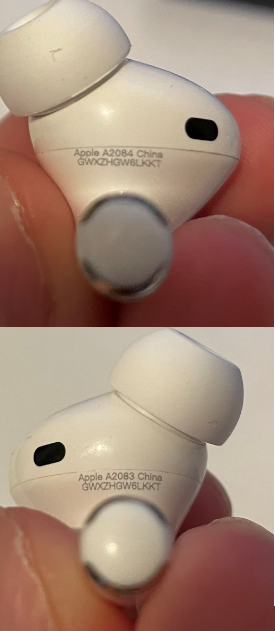

These aren’t the Airpods you’re looking for
No really… they are not. This is a story about some fake Airpods Pro I recently stumbled upon. What’s more interesting, they are easily one of the best fakes I have seen popping up on the Internet. So, without further ado, let’s pinpoint some details and help you out to spot those fakes.
Packaging
Starting with the box we can already see some subtle differences.

The most obvious one being that the original (first picture) has two stickers. You can see some font-weight differences, especially in lines “Designed by Apple in California Made in Vietnam/China”, model number stamps and serial numbers. The “Energy Verified Only” stamp seems to be smaller on fakes too.
Before we go in the detail we can try checking serial numbers on https://checkcoverage.apple.com.

When you open the box, you’ll find a set of manuals, Airpods Pro + charging case, a cable and a set of spare ear tips. Everything mentioned is well showcased in Redskull’s clip: https://www.youtube.com/watch?v=iSrhioWdgII. At 3:00 he mentions the insides of the original’s box being made from cardboard. In my case it was made from plastic.
Additionally, when comparing manuals (2:20 in the Redskull’s video) mine looks like a fake.

The Charging Case
First thing worth mentioning here is that there should be more space between the hinge and text “Designed by Apple in California Assembled in China”. While I’m already mentioning the hinge, do you see that two-color sparkly effect when the light shines upon it. Yeah, that shouldn’t happen. Original has that hinge in a matte finish. You can check it in motion in that Redskull’s clip (4:17) mentioned before.

Now let’s open the case and take a look under the lid.

Straight away you can see that the original ones have serial, model number A2190 (which is the model number for Airpods Pro charging case) and 519 mAh battery capacity info on the left side. On the right side there’s an FCC logo, universal waste mark and an info 1A for a 5V source. This differs a bit in case of European models where instead of FCC logo you would find a CE logo on the left side.

As the icing on the cake, when you try to factory reset the earphones they follow the pattern mentioned on official Apple’s support page: https://support.apple.com/en-us/HT209463. BUT, when the amber lights stops flashing there’s is a subtle blue light flashing from the inside of the case, Take note that there shouldn’t be any additional led lights other than the status one.
The Earbuds
This is where the things get really interesting. Visually they are almost identical to the originals. The air vents and proximity sensors are rightfully placed and look just like the real deal. The only difference I was able to spot is that the serial and model number are written a bit too close to the edge where two parts connect. The makers were even careful with the model numbers A2083 for the left pod and A2084 for the right one. Most of the fakes on the Net don’t have that attention to details.

But that’s not all. Let’s nitpick a bit here. Since I got those in Europe, there should be an additional “CE” stamp right below the serial number.
Glitch in the Matrix
Do they work? This is probably the question you’ve been asking yourself while reading this. Well, they kinda do. To give a bit of context they were paired with an iPhone running iOS 14.4. They were instantly paired with the phone when unboxed and in the system they manifested themselves just like regular Airpods Pro.

I could customize the controls, switch between noise cancellation and transparency mode and I could even use Siri. On the picture above you can see that the controls UI looks just like the real deal.
Well you see, I mentioned switching between noise cancellation and transparency. Thing is, while transparency mode worked perfectly, noise cancellation wasn’t doing anything. There was little to no difference between regular mode and noise cancellation. As for the sound quality of the earphones, it was actually quite decent.
So for now, putting noise cancellation aside (some fakes have that working as well), everything looks like the real deal. But there’s something they missed. Let’s take a screenshot and see some details about those Airpods.
So, the model number checks out. Serial number checks out as well. It even matches across the box and charging case. That’s also something that gets ignored while making fakes. Check Redskull’s clip mentioned before. Only his box shares the same serial as mine. Case and the software are introducing new ones.
Okay let’s get back to the topic. Remember that I mentioned they missed something? Everything lies in the firmware version 3A283 which is actually a correct value. The firmware got released around September, 2020 around the same time as iOS 14. With that new version there was a feature release called “Spatial Audio” which is nowhere to be found here. That control UI should have it.
Epilogue
Let’s try to sum this up and give some extra tips. Because of the general popularity of Apple, their products are often being faked. Be extra careful if you plan to buy them on second-hand market sites. Fakes can be sold in regular electronics stores as well. Check here if your store is on the official Apple reseller list: https://locate.apple.com. While checking legitimacy of your product on https://checkcoverage.apple.com. Do remember that fake Airpods can use legit serial numbers and you should consider focusing on details mentioned here.